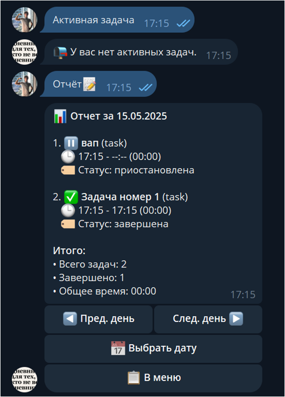

Разработка модуля аналитики и генерации отчетов
15 мая 2025 | Автор: Сулейманов Эмиль
На этой неделе мы завершили разработку модуля аналитики и генерации отчетов для нашего Telegram бота. Это ключевой компонент проекта, который позволяет пользователям получать детальную информацию о своей активности.
Реализованы следующие функции:
- Генерация ежедневных отчетов о активности
- Еженедельная сводка с визуализацией типов задач
- Месячная аналитика с трендами продуктивности
- Экспорт данных в удобном формате
Это значительный шаг вперед, так как именно эта функциональность отличает наш бот от других решений на рынке. Теперь пользователи смогут не только фиксировать свои задачи, но и получать ценную аналитику для повышения своей эффективности.
В ближайшее время планируем провести тестирование этого модуля с участием фокус-группы и внести необходимые улучшения на основе полученной обратной связи.
Аналитика
Отчеты
Визуализация